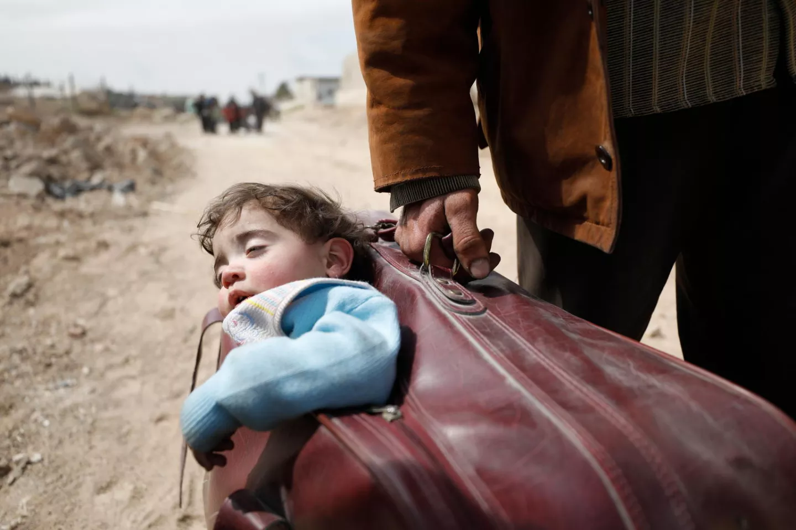

304M
International migrants
The United Nations estimated about 304 million international migrants in 2024.
UN DESA · 2024People move for many reasons. Explore how migration, displacement, borders, opportunity, conflict, climate, health and human rights connect our world.

Migration and displacement affect children in many different ways. UNICEF emphasizes that children retain their rights to protection, care, education and essential services regardless of why or how they move.
Different datasets measure different forms of movement. Always ask what population is being counted, where, and when.
The United Nations estimated about 304 million international migrants in 2024.
UN DESA · 2024UNHCR reported 117.8 million people forcibly displaced at the end of 2025.
UNHCR · Global Trends 202568.7 million people remained displaced within their own countries because of conflict or violence at the end of 2025.
UNHCR / IDMC · 2025Before interpreting a statistic, identify what type of movement it describes.
Movement from one place to another. Migration can occur within a country or across international borders, temporarily or permanently, and for many different reasons.
Movement involving a change of country of residence. People may move for work, education, family, safety or other reasons.
People may be forced to leave their homes because of persecution, conflict, violence, human-rights violations or other events seriously disturbing public order.
People who are forced to leave their homes but remain within the borders of their own country. They are commonly called internally displaced people, or IDPs.
A person who is outside their country and needs international protection because returning may expose them to serious danger or persecution under international refugee law.
A person who has sought international protection and whose claim for refugee status or another form of protection has not yet received a final decision.
Internal displacement is a crucial part of the global picture. A person can lose a home, school, livelihood or access to health services without ever leaving their country.
This distinction matters because the legal protection systems, humanitarian responsibilities, services and available data can differ depending on where a person moves.
UNHCR Global Trends 2025
Movement usually has multiple causes. Economic, social, political, environmental and personal factors can interact.
Employment, wages, education and the search for better opportunities can shape migration decisions.
Family reunification, relationships and existing community networks influence where people move.
Violence, persecution and insecurity can force people to leave homes and communities.
Floods, storms, drought, environmental degradation and other hazards can influence movement and displacement.
Students and families may move to access schools, universities, training and other learning opportunities.
Real-life movement is often shaped by several pressures at once rather than one simple cause.
Migration affects people, families, communities, countries of origin, transit and destination.
Migrants contribute skills, labour, knowledge and entrepreneurship in destination communities.
Money sent home by migrants can support households, education, health care, housing and local investment.
Migration can connect communities through ideas, professional networks, technology and social connections.
Migration can also involve barriers, exploitation, discrimination, skills shortages or disruption to families and communities.
Migration and displacement can interrupt education, health care, family life, safety and social connection.
Movement can interrupt schooling or make enrollment and continuity of learning difficult.
Access to preventive care, vaccination, medicines, mental-health support and routine services can be disrupted.
Children who are separated from caregivers or living in unstable conditions may face additional protection risks.
Language, culture, identity and relationships can influence how young people experience a new environment.
One of the most important skills in global health is knowing exactly what a number represents.
Is the number counting migrants, refugees, asylum-seekers, IDPs, returnees or another group?
Is the statistic describing a country of origin, transit, destination or internal movement?
Is it a stock measured at a particular date or a flow measured over a period?
Is the number an absolute count, percentage, rate or share of a particular population?
Who collected the data? UNHCR, IOM, UN DESA, national statistics or another organization?
Are the data estimates, provisional figures or complete administrative counts?
Who? Where? When? How measured? Compared with what?
Do not rely only on a headline number. Open the underlying data and investigate patterns yourself.
Explore refugees, asylum-seekers, internally displaced people, origins, destinations and demographic patterns.
Explore UNHCR data → UN DESAExplore estimates of international migrants by destination, origin and sex across countries and years.
Explore UN data → IOMInvestigate how mobility, health systems, emergencies and social conditions interact.
Explore IOM → IHMEExplore population and migration estimates within the broader Global Burden of Disease data ecosystem.
Explore IHME →Migration itself is not automatically harmful to health. Health outcomes depend strongly on conditions before, during and after movement.
Ask not only “Where did someone move?” but also “What conditions shape their health before, during and after movement?”
Health needs can continue across borders and through different stages of movement.
Health may already be shaped by conflict, poverty, environmental conditions, health-system access and previous care.
Continuity of medication, vaccination, nutrition, sanitation, safety and mental-health support can become difficult.
Language, legal, financial, administrative and cultural barriers can influence access to care.
Health can improve when people gain safety, stability, housing, education, employment and access to inclusive health systems.
Displacement can interrupt diagnosis, treatment, prevention, medicine supply chains and follow-up. This is particularly important for conditions where treatment continuity matters.
The Global Fund works with partners to maintain HIV, tuberculosis and malaria services during humanitarian and displacement crises.
In crisis settings, overcrowding, disrupted services, population movement and treatment interruptions can make tuberculosis prevention and care more difficult.
Maintaining prevention, diagnosis and treatment during displacement protects both displaced populations and host communities.
Explore Global Fund work →Environmental change can influence where people live and whether communities can safely remain where they are.
Extreme heat can affect health, livelihoods, water availability and habitability.
Floods can damage homes, schools, health facilities and essential infrastructure.
Drought can affect agriculture, food security, water and household livelihoods.
Disasters can interrupt health services and medicine supply chains, especially in fragile settings.
Movement is not a separate topic from development. It intersects with poverty, health, education, inequality, cities, climate and global partnerships.
SDG 10 includes a specific target to facilitate safe, orderly, regular and responsible migration and mobility of people.
Target 10.7Migrants and displaced people need equitable access to health services and continuity of care.
Poverty, opportunity and social protection can influence migration decisions and outcomes.
Children and young people on the move need continuity of learning and educational inclusion.
Safe employment, labour rights and fair conditions are central to healthy and sustainable migration.
Cities need inclusive housing, transport, health, education and infrastructure for growing and changing populations.
Climate hazards can affect livelihoods, health, displacement and the resilience of communities.
Migration and displacement require cooperation across countries, institutions and sectors.
Test your understanding of concepts, data and connections between migration and health.
Choose one country and investigate one migration or displacement indicator. Then ask:
Every difference matters. Explore it.
Use primary and authoritative sources whenever you investigate migration and health.